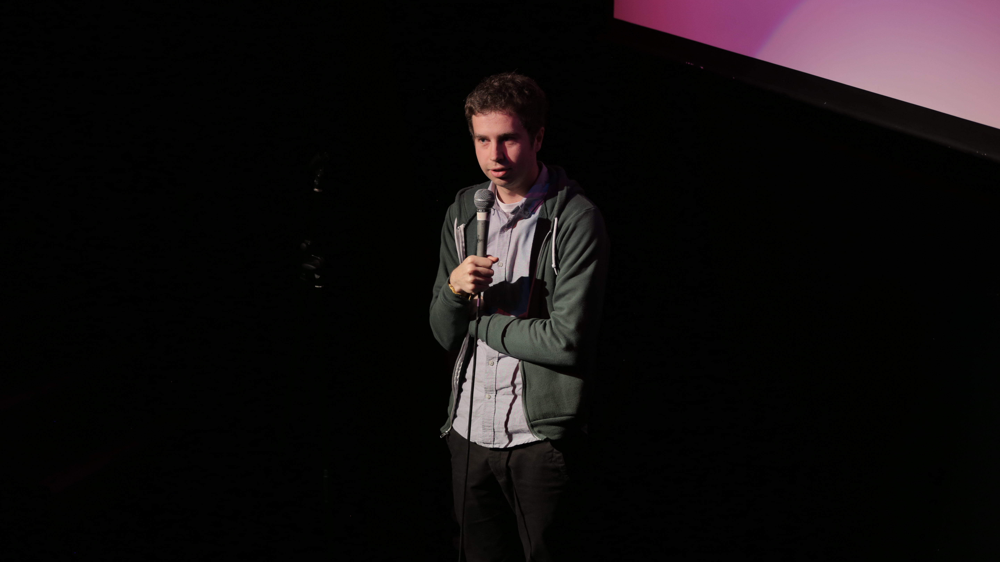
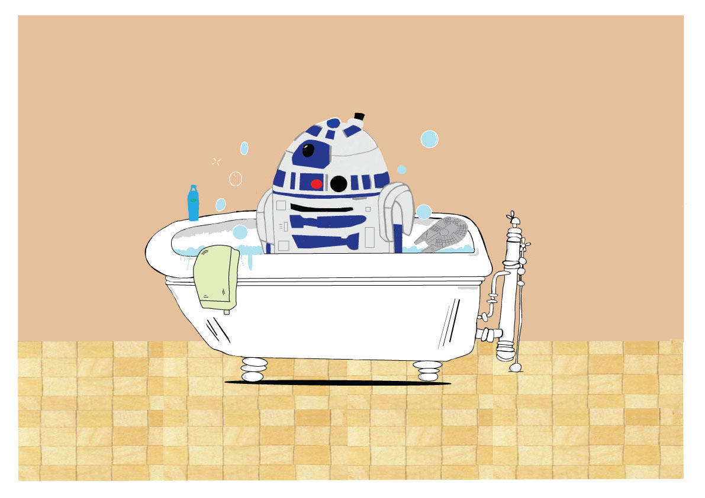
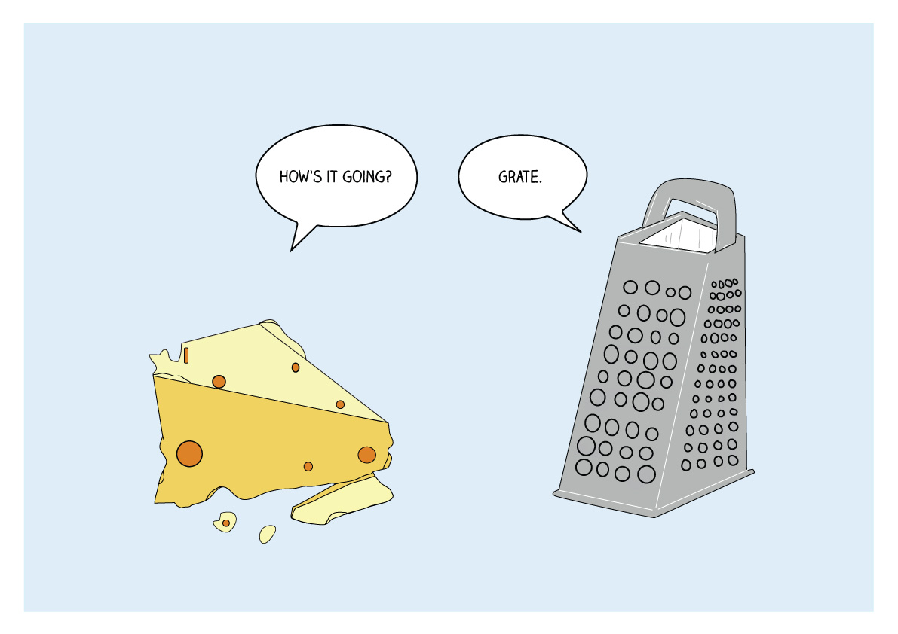
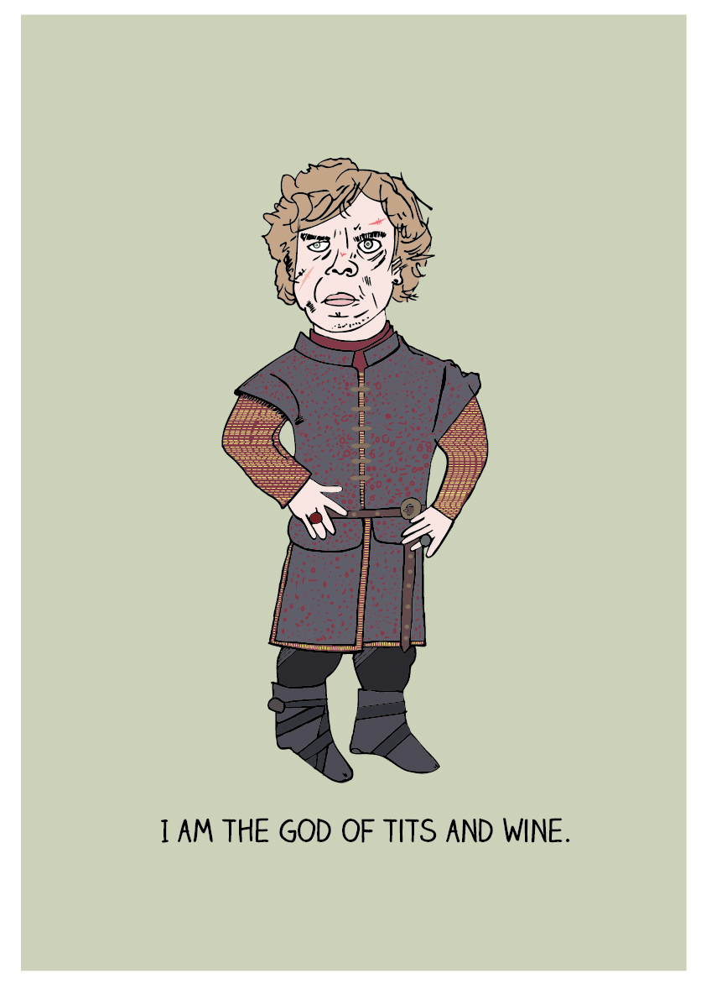
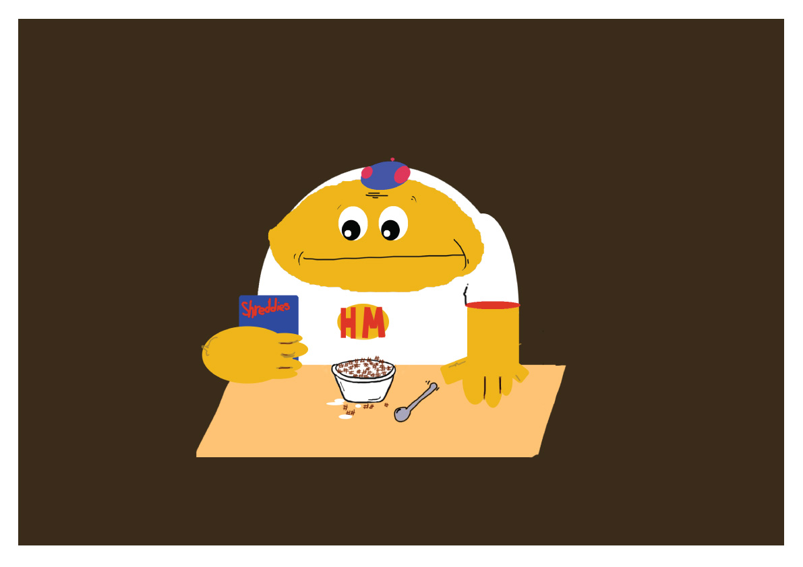
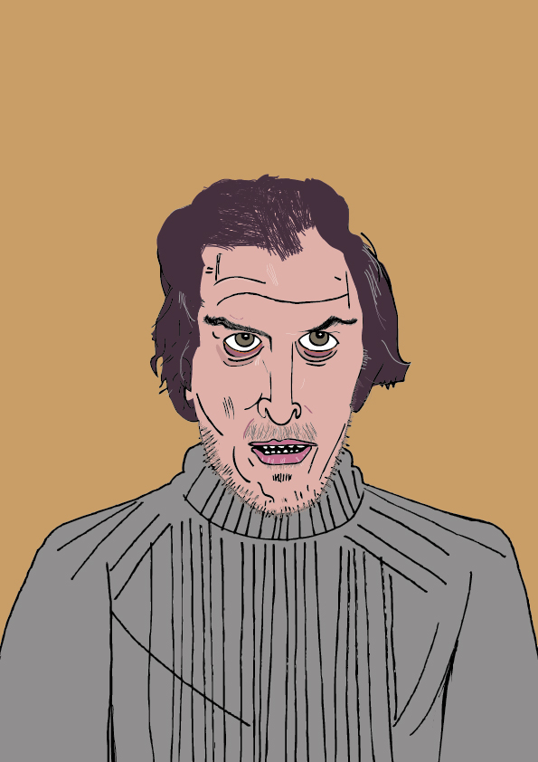
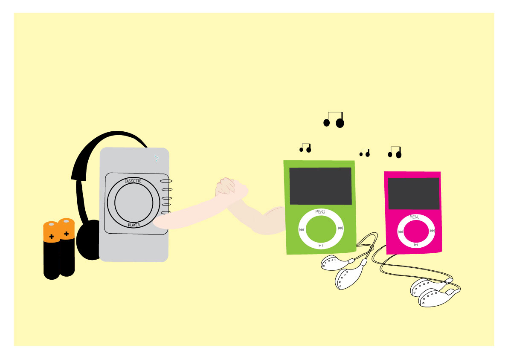
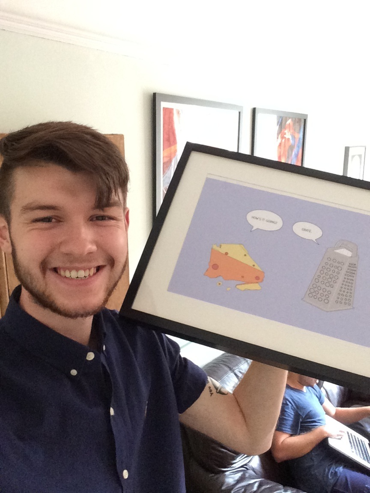
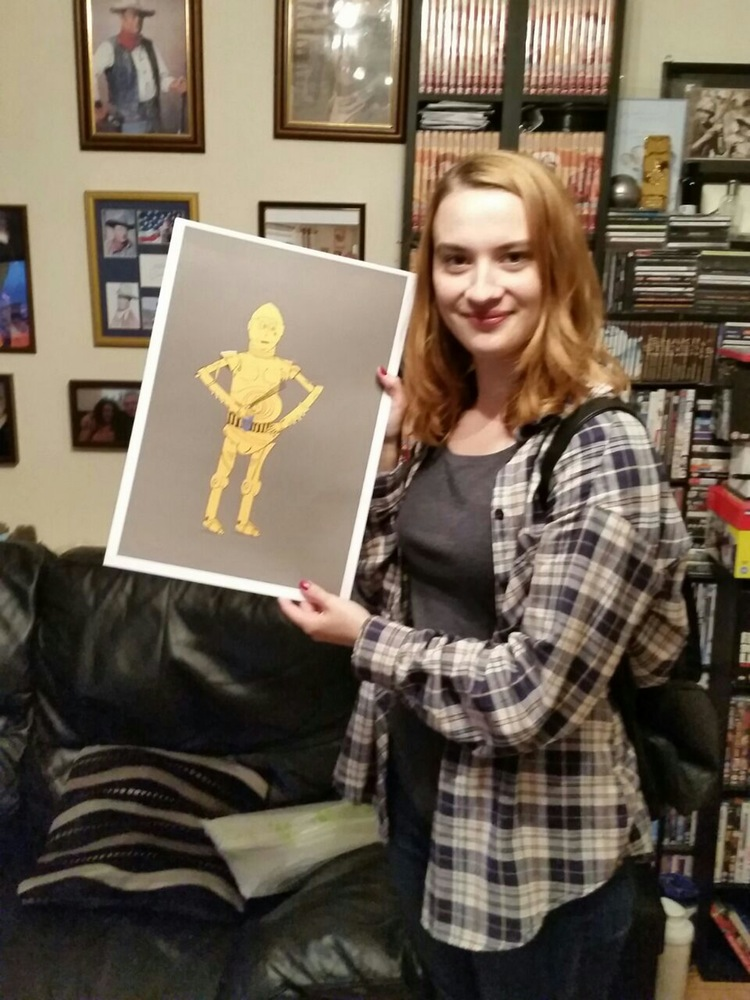

Hi I am danny. I am a comedian and an illustrator.
Pleasance Comedy Reserve 2017. Finalist of Bath New Act 2017
Finalist of Stand Up For Cider 2017
I am a finalist of the Leicester Square New Comedian Of The Year 2016
I was shortlisted for the BBC Radio New Comedy Award 2014
and I was nominated for Birmingham Comedy Festival Breakthrough Act 2014
As heard on BBC Radio 2 and 4 Extra.
'Danny Clives turns life's struggles into understated, brilliant observed gags' - Joe Lycett.
‘Downbeat Geek’ - Chortle

>
He was a finalist of the Leicester Square New Comedian Of The Year 2016 and was also shortlisted for the BBC Comedy Award in 2014.
His comedy material is based on his struggle being a human being, failures with women and trying to fit in. These topics are delivered through this low energy, shy persona which is actually how he is in real life just 1% exaggerated.
He is currently writing a show he plans to take to the Birmingham Comedy Festival in October.
Otherwise spends most of his spare time running his illustration shop, designing websites and sleeping past 10am.
www.twitter.com/dannyclives
www.stuffbydanieljamesclives.com
Shortlisted for the Pleasance Comedy Reserve 2017
Stand Up For Cider Finalist 2017
Leicester Square New Comedian Of The Year 2016 Finalist
Shortlisted for the Pleasance Comedy Reserve 2016
Shortlisted for the BBC Radio New Comedy Award 2014
Nominated for Birmingham Comedy Festival Breakthrough Act 2014
As heard on BBC Radio 2 and 4 Extra.
'Danny Clives turns life's struggles into understated, brilliant observed gags'. Very Funny' - Joe Lycett.
'Danny Clives is a lo-fi wonder. His shambling frame belies a sharp comic mind and audiences fall for his whimsical likeability.A two time Comedy Ladder winner and welcome back not just any time but EVERY time.' - Comedy Ladder
‘Has a good shtick’ - Gary Delaney
‘Downbeat Geek’ - Chortle
Danny was born in 1990 in dudley
Danny Clives is a comedian.
Illustrations
little icons you can click on and make bigger with a back story of how i came
up with the idea






Firstly, here is some FAQ
Q4; How are your prints made?
A; I use a pencil to draw my idea on a plain piece of white A4 paper, outline it carefully with a fineliner then scan it and add colour in Illustrator. I print the design at home using my Brother printer using the 350gsm paper I buy from a local paper shop. I will then go to the post office, buy a tube and send it off to you. Basically, this operation is all me and no one else.
pencil, fineliner, A3 Ice White 300gsm paper, ink, poster tube, rubber, Adobe Illustrator, my hands
This is an A3 print and comes on Ice White 300gsm paper.
All of the prints are made at home via my inkjet printer so if you buy one I will print it myself and post it to you myself.
All photos by Damien Hyde Photography.
Merchandise


PHOTOS OF FRIENDS HOLDING PRINTS
AND PEOPLE PUTTING ON TSHIRTS
BUY THINGS(T-shirts and prints)
mini shop with buttons goes here